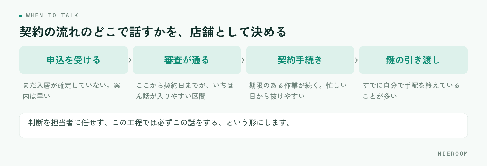

契約後の引越しやライフラインの提案が取りこぼされるのは、担当者の意識が低いからではありません。話すタイミングが業務の流れに埋まっていないため、忙しい日から順に抜けていくだけです。この記事では、提案できるものの棚卸しから、話す場所の固定、案内の型、記録の残し方までを順に整理します。
この記事の結論
付帯の提案は、声かけの上手さではなく契約の流れのどこで話すかを決めて記録に残すことで安定します。タイミングが固定されていれば、提案率は担当者ごとのばらつきに左右されにくくなります。
契約後の提案が抜け落ちる理由
申込から契約までは、期限のある作業が続きます。審査、書類、重要事項説明、鍵の引き渡し。どれも遅れると影響が出るため、自然と優先されます。一方で引越しやライフラインの案内は、抜けてもその場では何も起きません。だから最初に削られます。
理由は大きく3つです。ひとつ目は、話すタイミングが決まっていないこと。「余裕があるときに」と思っている限り、余裕がある日は来ません。
ふたつ目は、何を案内できるのか担当者が把握していないことです。取引のある業者や、案内できる範囲が共有されていなければ、話そうにも話せません。
みっつ目は、提案したかどうかが残らないことです。記録がなければ、抜けていても誰も気づけません。契約と売上が同じではない考え方は「契約＝売上」ではない前提でも扱っています。
案内できるものを棚卸しする
まず、自店で実際に案内できるものを一覧にします。「できたらいいもの」ではなく、今日お客様に説明できるものだけを書き出してください。
- 引越し業者：取引のある業者、繁忙期の押さえ方、見積もりの取り方
- 電気・ガス・水道の手続き：案内する範囲（連絡先を渡すだけか、手続きまで支援するか）
- インターネット回線：物件ごとの設備状況と、申し込みから開通までの目安
- 家具・家電：単身向けのセットや、レンタルという選択肢
- クリーニング・不用品の処分：退去側で必要になることが多い
一覧にすると、案内できるものと、話に出るのに用意がないものが分かれます。後者が、次に取引先を探すべき領域です。なお、保険の募集には資格や登録が必要になるため、自店で扱える範囲は必ず事前に確認してください。
話すタイミングを契約の流れに固定する
棚卸しが終わったら、それぞれを「いつ話すか」に割り当てます。ここが決まっていないと、いくら一覧を作っても使われません。

契約の流れのどこで話すかを、店舗として1つに決めてしまいます。判断を担当者に任せず、この工程では必ずこの話をするという形にすると、忙しい日でも抜けにくくなります。
早すぎる案内は、お客様がまだ入居を決めきっていない段階になり、話が入りません。遅すぎると、お客様がすでに自分で手配を終えています。申込が確定してから契約日までの間が、多くの場合いちばん話が入りやすい区間です。
案内の型を1枚にまとめる
タイミングが決まったら、話す内容を型にします。担当者ごとに説明が変わると、お客様の反応もばらつき、うまくいった理由も分かりません。
1枚にまとめるのは、次の4つで足ります。
- 切り出す一言：手続きの案内として自然に始める文。売り込みの形にしない
- 案内できるものの一覧：お客様が選べるように並べる
- よく聞かれる質問と答え：費用の目安、期限、自分で手配する場合との違い
- 断られたときの引き方：一度で終わらせ、必要になったら連絡できる形だけ残す
この4つ目が抜けている店舗は少なくありません。断られた時点で終わりにせず、連絡先だけ残すことで、あとから相談が戻ってくることがあります。
提案したかどうかを記録に残す
提案の記録は、成約したものだけでは意味がありません。提案した・しなかった・断られたの3つが残って初めて、どこで落ちているのかが見えます。
案件ごとに、次の項目を持ちます。
- 案内した項目（引越し、回線、家具など）
- 案内した日
- 反応（申込／検討中／不要）
- 申込になった場合は、その後の進捗
記録が揃うと、原因の切り分けができます。そもそも案内していないのか、案内はしているが断られているのか。前者なら手順の問題、後者なら伝え方の問題です。この2つは対策がまったく違うため、混ぜたまま「もっと提案しよう」と言っても改善しません。
| 記録から分かること | 実際に起きていること | 次に手を打つ場所 |
|---|---|---|
| 案内した記録がほとんどない | 話すタイミングが業務に埋まっていない | 契約の流れのどこで話すかを固定する |
| 案内はしているが不要が多い | 切り出し方や時期が合っていない | 案内の型と、話す区間を見直す |
| 検討中のまま止まっている | 追いかける担当と期日が決まっていない | 次に連絡する日を案件に持たせる |
よくある失敗
いちばん多いのは、目標だけを決めて手順を決めないことです。件数の目標を掲げても、話す場所が決まっていなければ結果は変わりません。決めるのは目標ではなく、業務のどこで話すかです。
次に多いのが、案内する項目を一度に増やしすぎることです。5つも6つも並べると、お客様は選べず、担当者も説明しきれません。まず1つに絞って全案件で必ず案内するほうが、結果として定着します。
もう1つは、記録を担当者の判断に任せることです。「申込になったものだけ入力」という運用にすると、提案したのに断られた案件が消えます。断られた記録こそ、次の改善のもとになります。
よくある質問
付帯の案内は、売り込みだと思われませんか？
担当者によって提案の数に差が出ます。どうすればよいですか？
記録はExcelでも回りますか？
まとめ：タイミングが決まれば、提案は続く
契約後の引越し・ライフラインの提案は、担当者の熱心さではなく手順で決まります。案内できるものを棚卸しし、契約の流れのどこで話すかを固定し、提案したかどうかを記録に残す。この3つが揃えば、忙しい月でも提案は止まりにくくなります。
始めるときは、項目を1つに絞ってください。全案件で必ず案内する項目が1つできれば、そこから広げられます。記録は、断られたものも必ず残す。そこに次の改善のもとがあります。
ミエルームは、申込から契約・入金までを案件ごとに1行で追える形にしており、接客・反響の成績や確定売上と見込みの分離もあわせて見られます。Excelデータの取り込みと初期設定の代行、デモアカウントの発行、最短即日でのスタートに対応していますので、付帯の記録をどう持つかの段階からご相談ください。